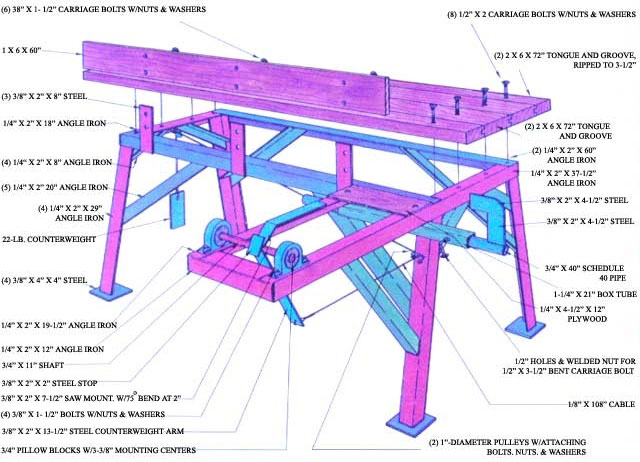

Here's homebuilt tool that could very well become the Cuisinart of stackwood construction:
The cordwood cutoff saw's length stop adjusts to trim logs for different wall thicknesses.
The square piece of metal butts against the frame to stop the saw's rise.
As with any equipment, always be sure to observe proper safety procedures.
Whether you're putting up an inexpensive outbuilding, adding an attractive wall to your home, or even erecting an entire dwelling, there are few building methods that can match the low cost, speed, and ease of construction of the stackwood technique. In fact, cordwood masonry has resulted in the arrival of more enthusiastic mail here at MOTHER (concerning both the numerous articles in our magazine and the three cord-wood structures at our Eco-Village research center) than has any other building idea we've yet explored.
And, frankly, we're not a bit surprised by the construction method's popularity . . . since erecting a stackwood wall isn't much more difficult than piling up an orderly heap of firewood. What's more, the finished product-with its interesting patterns of log ends and masonry-is both distinctive and beautiful.
Well, we've got good news for would-be wood stackers. MOTHER'S Eco-Village staffers have come up with a piece of equipment (it was inspired by Jack Henstridge, our Cordwood Construction Seminar instructor) that makes building with firewood even easier . . . and produces logs that are all equally long and properly squared off at the ends.
WHAT LENGTHS WILL WE GO TO?
For small cordwood projects, it's perfectly feasible to section all the timbers by hand, but we've found that the cutoff saw pictured here is a real timesaver for larger jobs . . . such as MOTHER'S cordwood barn (featured on page 178 of issue 72). If you're contemplating a significant stackwood project, then, you might do well to start by assembling the device shown in the photos and drawing on the opposite page.
The illustrations should provide all the information about dimensions and materials that an amateur welder will need to put the table together. Therefore, we'd like to devote the rest of this space to touching on a few of the important construction procedures, and describing what we've found to be safe operating methods.
THE HOW AND WHY OF IT
We made the tabletop for our cutoff saw from some 2 X 6 tongue-and-groove pine decking that we had on hand, but less expensive standard "two-by" lumber (in any appropriate combination of widths) would work just fine. Do be careful, however, to locate the carriage bolts no more than 6 inches from the working end of the top . . . making sure that the saw chain can't possibly hit one of them.
We also did a bit of scrounging when putting together the length stop. A section of 1-1/4" box tubing (left over from the welding table described on page 130) made an excellent sleeve for a longer piece of 3/4" Schedule 40 pipe. But as it happens, the 3/4" material will also slide snugly inside a 1" Schedule 40 pipe. Whichever you decide to use, do be sure to include the bent 3/8" X 3-1/2" carriage bolt that serves as a setscrew.
There's a temptation to employ the length stop's make-do bushing arrangement when assembling the saw's pivot . . . but after trying that approach, as well as the pillow-block setup shown in the illustrations, we opted for the latter. The ball bearings help the saw to move smoothly through its arc and keep the blade rigidly square to the log.
Of course, when you first bolt your saw's handle to the pivot arm assembly, you may find that the bar isn't vertically square to the table. In order to get our Stihl 048 running perfectly true, we sandwiched a 3/16" X 3" X 12" piece of steel between the pivot arm and the handle (both to provide extra rigidity and to compensate for irregularities on the saw's underside) and then shimmed the pillow blocks as needed.
STAFF PHOTOS
Finally, it might also be tempting to dispense with our cable-and-pulley counter-weighting system. The arrangement does, however, have several important functions. First, it insures that the chain saw will remain in whatever attitude you set it. Thus, you can raise the tool and leave it up for log loading (please see the following notes on safety before attempting this procedure). Furthermore, the counterbalancing prevents the saw's weight from carrying it down into the wood . . . instead, you control the speed of the cut by applying pressure to the handle.
OPERATING THE CUTOFF SAW . . . SAFELY
Several of the features incorporated in our table's design are specifically intended to increase operator safety. Because the saw pivots from the handle (rather than from the bar tip, as is the case on some otherwise similar units we've seen), wood chips are thrown at the ground rather than into the user's face. Also, in the event of a chain failure, the cutting links would be directed away from the operator's body.
In addition, the direction of chain travel pulls the wood in against the backboard . . . to prevent skipping and lessen vibration. Still, it's a good idea to have an assistant brace the far end of the log (as shown in the accompanying photos) to prevent it from twisting.
We've found that the minimum size chain saw for effective use with our cutoff table is about 2.5 cubic inches . . . and the tool should have at least a 16 "-long bar. (In fact, we prefer to use a saw of between 3.5 and 5 cubic inches with a 20 "-long bar.) You should, of course, observe all the standard rules of chain-saw safety while operating the cutoff unit.
And, of course, no matter what size the saw or what use it's put to, kickback is the primary hazard facing the user. Because this situation usually occurs when the tip of the blade contacts an object, the tendency of the chain saw to pull the log against our unit's backboard helps ward off the possibility of kickback. But, as added insurance, we built in a stop to prevent the saw from pivoting beyond about a 45° angle.
Even so, though, we strongly recommend that you use only a saw with a chain brake as part of the cordwood cutoff system . . . for two reasons: First, the brake will stop the chain in the event of kickback. And-equally important-the mechanism can be used to positively lock the chain while you position a log on the tabletop. Without a chain brake, the only safe way to load the cordwood cutoff saw is to shut the motor off while doing so!
Although saving time and being able to control length and squareness are the primary reasons for building our timber lopper, we think you're also likely to find the device useful for sectioning firewood into stove-size pieces or even cutting rough timbers to length for use in post-and-beam construction.
Besides, once the neighbors-many of whom will likely be skeptical when you begin the project-see your completed stackwood wall, there's a good chance that your cordwood cutoff saw will suddenly be in great demand!
|
|
|
|
|
 |
|
|